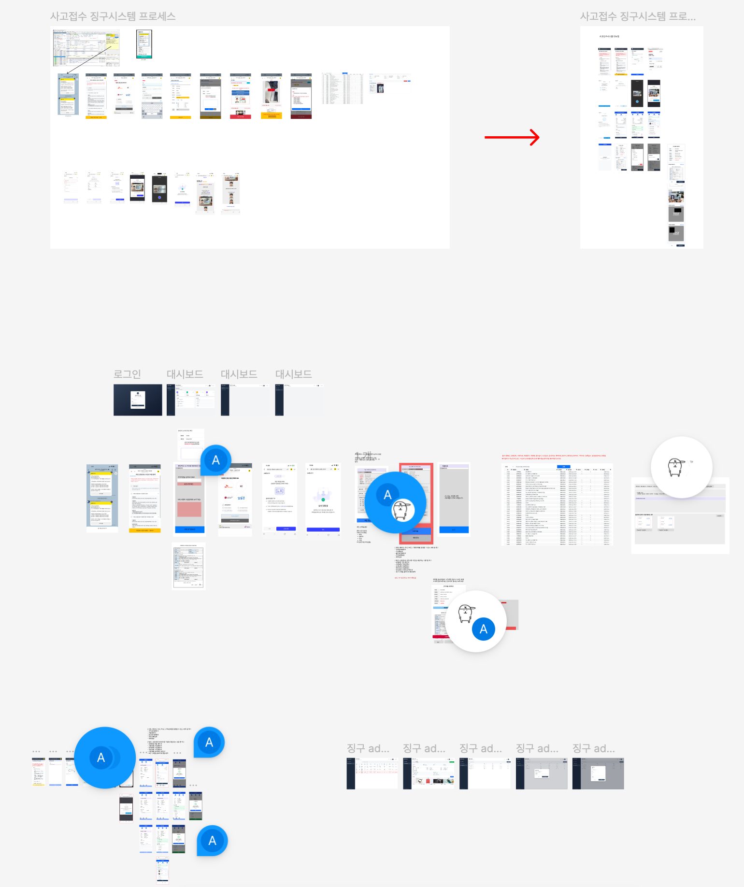
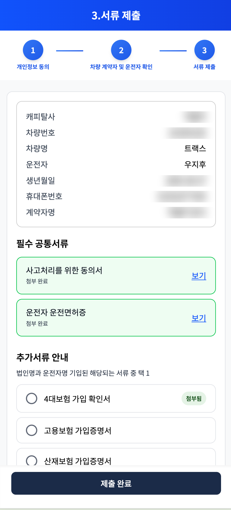
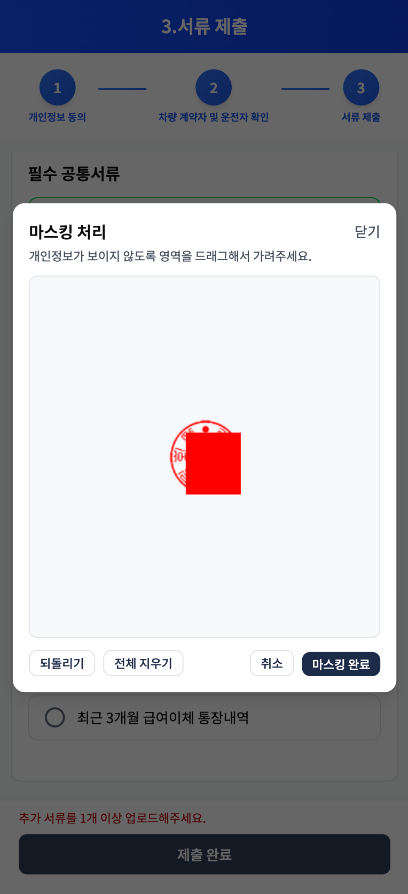
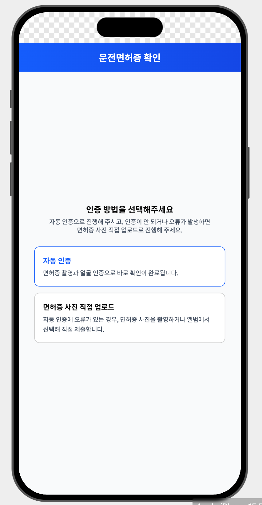
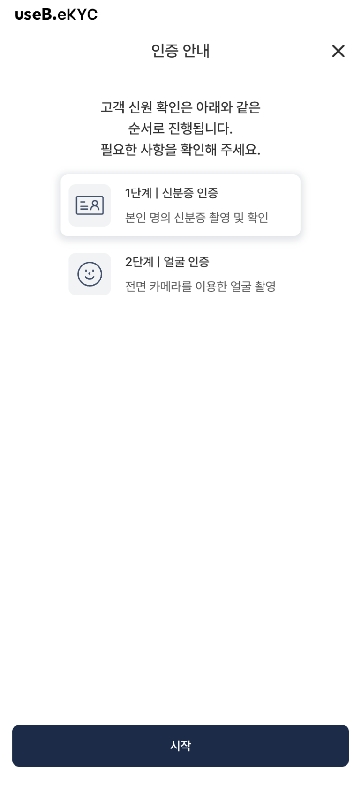
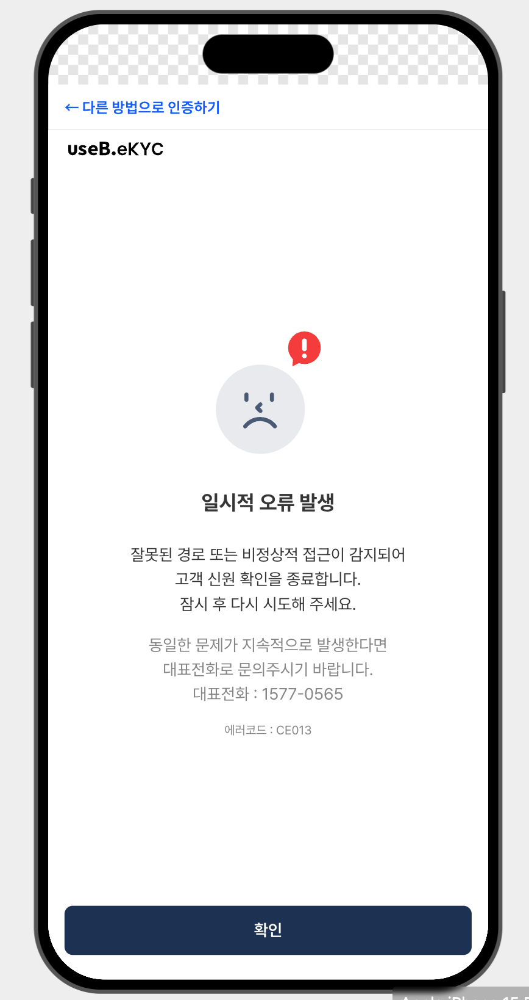
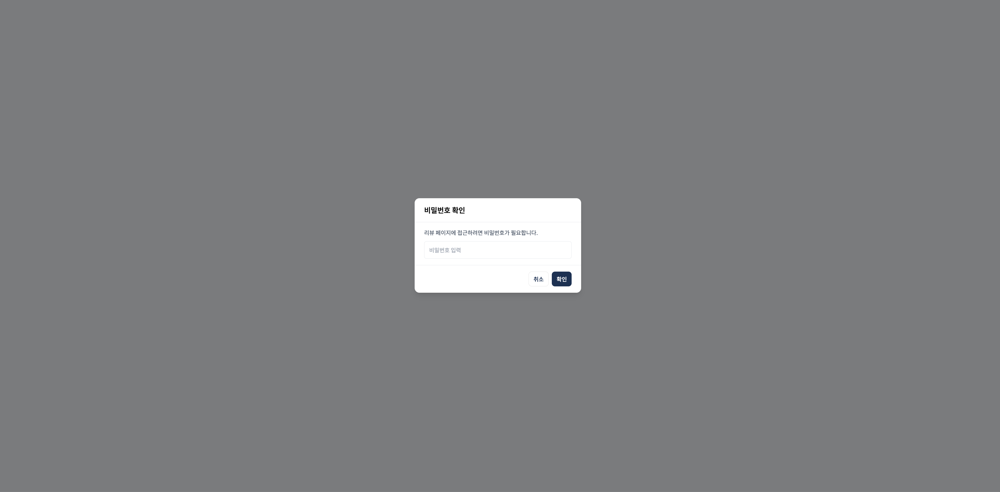
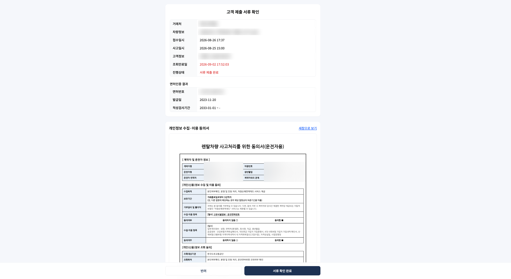

01문제 — 사고 서류를 카톡으로 받고 있었다
렌탈 차량에 사고가 나면 고객에게 동의서, 운전면허증, 보험 관련 증빙 같은 서류를 받아야(징구해야) 합니다. 기존에는 담당자가 카톡과 전화로 하나하나 안내하고, 고객이 보낸 사진을 수기로 정리해 거래처에 전달했습니다. 안내 누락, 서류 재요청, 개인정보가 메신저에 남는 문제가 반복됐습니다.
이 시스템이 특히 조심스러웠던 이유는 사용자가 우리 고객이 아니라 거래처의 고객이라는 점입니다. 거래처가 자기 고객에게 보내는 페이지이기 때문에 요구사항은 웬만하면 수용해야 했고, 화면 하나의 오류가 곧 거래처의 신뢰 문제로 이어지는 구조였습니다. 그리고 이 모든 걸 다루는 프론트엔드는 저 하나였습니다.
02접근 — 프로세스를 그리고, 혼자서 전부 만들었다
먼저 기존 카톡 기반 프로세스(as-is)를 화면 단위로 늘어놓고, 시스템화된 플로우(to-be)로 재구성했습니다. 고객이 밟는 단계를 동의 → 운전자 정보·서명 → 본인인증 → 면허 확인 → 계약자 확인 → 서류 제출 → 완료로 정리하고, 개인/법인 등 계약 유형별로 필요한 서류 요건까지 함께 정의했습니다.


1인 개발이었기 때문에 디자인에 쓸 시간을 줄이는 게 중요했습니다. 이때부터 Figma AI로 시안을 생성하고 다듬는 방식을 시도했고, 만든 시안을 프로토타입으로 거래처와 확인하며 요구사항을 좁혔습니다.
03결과물 — 링크 하나로 끝나는 접수 플로우
고객은 문자로 받은 링크에서 개인(신용)정보 동의, 운전자 정보 입력과 서명, PASS 본인인증을 거쳐 서류를 제출합니다. 계약자 정보를 확인하고 계약 구분(개인/법인)에 따라 요구 서류가 달라지며, 제출이 끝나면 거래처 담당자에게 검토 링크가 전달됩니다.


04Deep dive — 외부 인증이 실패해도 접수는 끝나야 한다
운전면허 확인에는 외부 업체의 eKYC(신분증 촬영 + 얼굴 인증)를 연동했습니다. 그런데 운영해 보니 외부 서비스 사정으로 얼굴 인증이 안 되는 경우가 생겼고, 거래처에서도 자동 인증만으로는 안 된다는 요구가 왔습니다.
- 자동/수동 선택 화면 추가 — 요구사항 변경을 수용해, eKYC 자동 인증과 면허증 사진 직접 업로드 중 선택할 수 있게 재설계
- 실패 시 탈출구 설계 — 얼굴 인증이 실패하면 오류 화면에서 "다른 방법으로 인증하기"로 선택 화면에 되돌아가, 수동 업로드로 접수를 끝낼 수 있게 함



05거래처 리뷰 페이지 — 제출된 서류의 검토까지
고객이 제출을 완료하면 거래처 담당자에게 검토용 링크가 전달됩니다. 링크는 비밀번호로 보호되고 조회 만료일이 있어 무기한 노출되지 않습니다. 담당자는 접수 정보, 면허 인증 결과, 서명된 동의서와 제출 서류를 한 화면에서 확인하고 반려 또는 확인 완료로 처리합니다.


06출시가 끝이 아니었다
오픈 이후에도 거래처 요구사항 변경과 유지보수가 계속됐습니다. 위의 자동/수동 선택 화면 자체가 운영 중에 추가된 요구사항이고, 그 외에도 서류 요건 변경, 문구·플로우 수정이 잦았습니다. B2B2C 시스템에서는 배포 이후의 변경 속도가 곧 서비스 품질이라는 걸 체감한 프로젝트입니다.
07배운 것
- 외부 의존성은 반드시 실패한다. 연동을 붙이는 것보다, 실패했을 때의 경로를 설계하는 데 더 많은 고민이 필요하다.
- 요구사항을 수용하는 것과 휘둘리는 것은 다르다. 거래처 요구를 받아들이되, 플로우 전체가 일관되게 유지되도록 화면 구조를 다시 잡는 건 만드는 사람의 몫이다.
- 1인 개발일수록 도구를 활용해야 한다. Figma AI로 디자인 초안을 빠르게 만들고, 아낀 시간을 예외 설계와 검증에 썼다.